archive.kyleparkercunningham.com now holds the catalogue — 295 works, every measurement, every provenance line. So this site no longer has to be one. Every sheet here is an attempt at the thing an archive can't do for itself: a route through it. Notes, findings and what I'd keep are in sketchbook.md.
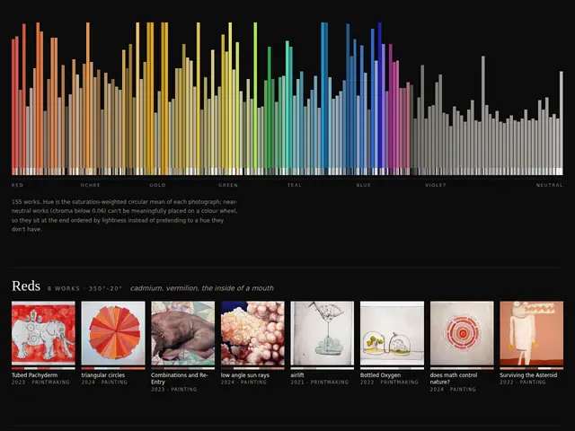
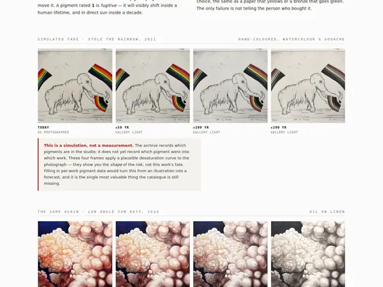
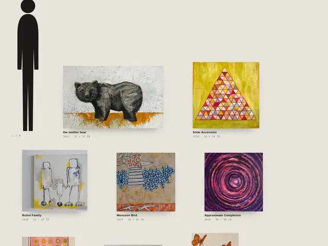
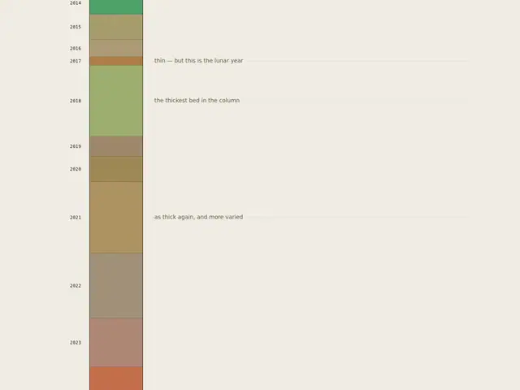
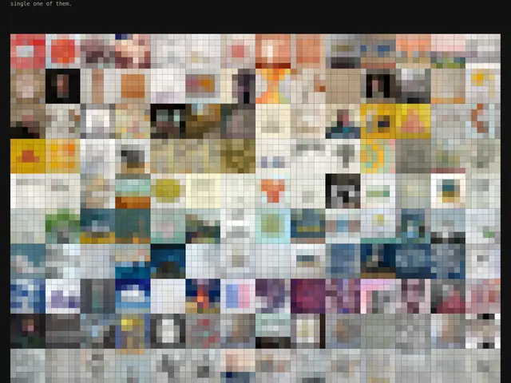
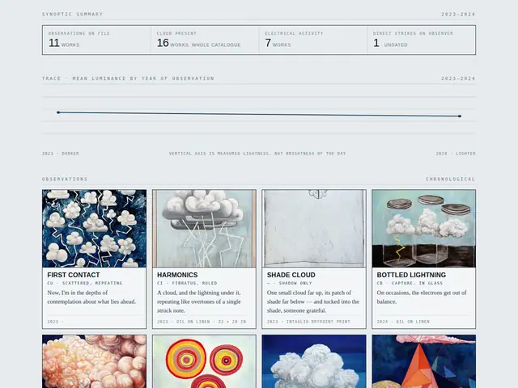
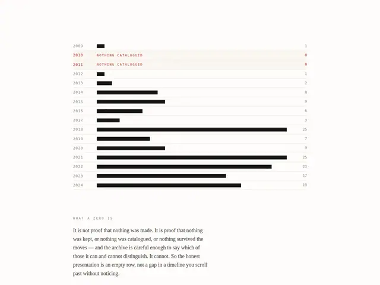
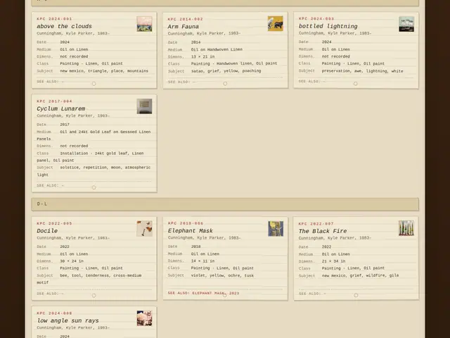
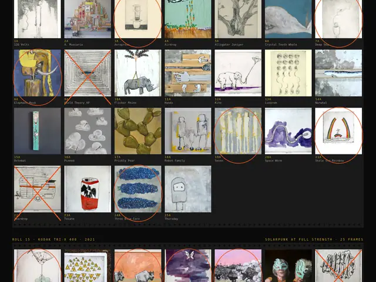
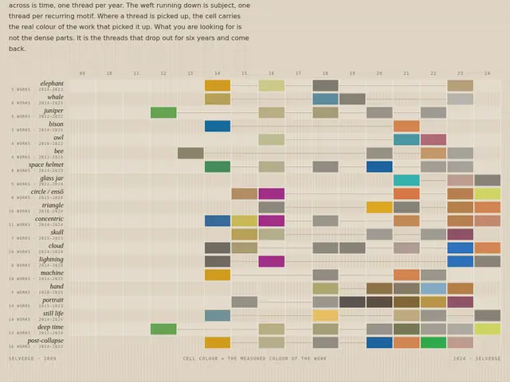
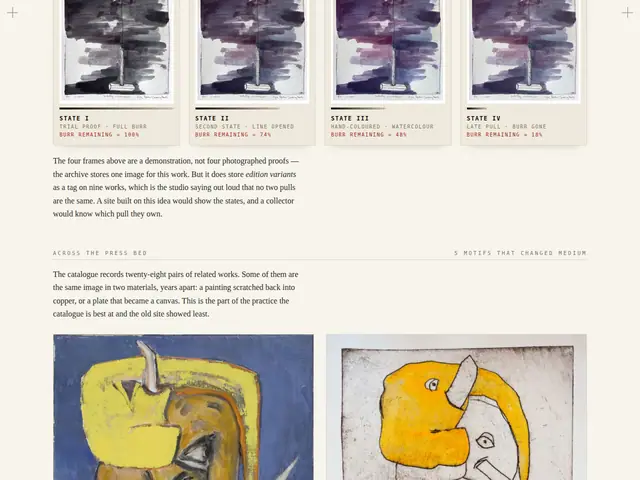
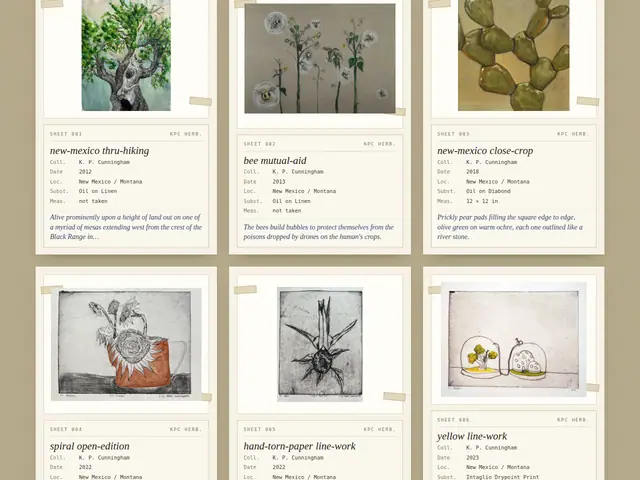
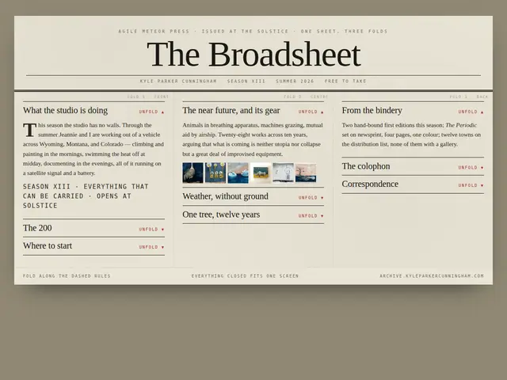
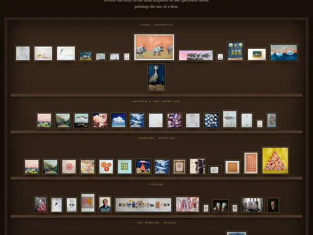
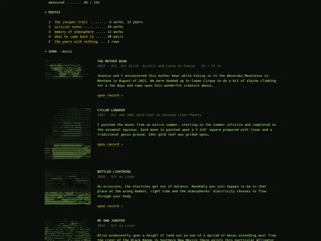
The previous five directions, kept here for comparison. Their finding — that the site is either continuity, identity, retrieval, the work, or impact — is what this run is arguing with: with a real catalogue standing behind it, retrieval stops being one of the five options and becomes the thing the site hands off.
Every image is a photograph of a real work from content/oeuvre/. Every number — hue, lightness, dimensions, tags, pigment lightfastness, the relations between works — is read from the archive or measured off the pixels. No lorem, no placeholder, no invented statistic.
Each sheet is one HTML file with its CSS inline. Imagery lives in assets/w and assets/t; the eighteen typefaces are self-hosted in assets/fonts. Nothing here needs a network.
python3 mockups/_build/prepare.py rebuilds the dataset and derivatives; gen1…gen5 write the sheets; shoot.py screenshots them at 1440 and 390 and reports overflow, broken images and console errors.
The archive holds 108 valuations and a private note per work. None of it appears on any sheet. A public route through the work does not need to know what anything sold for.